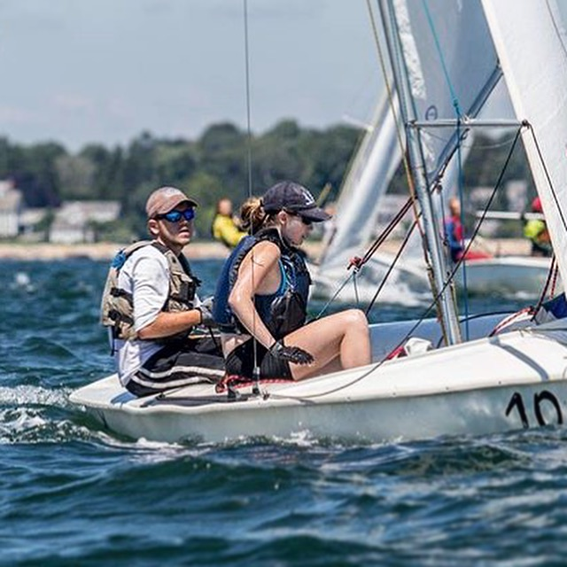
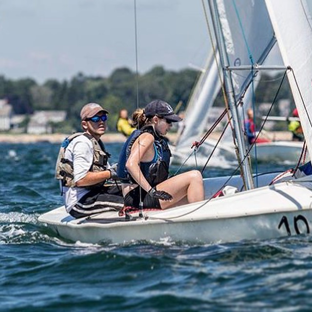
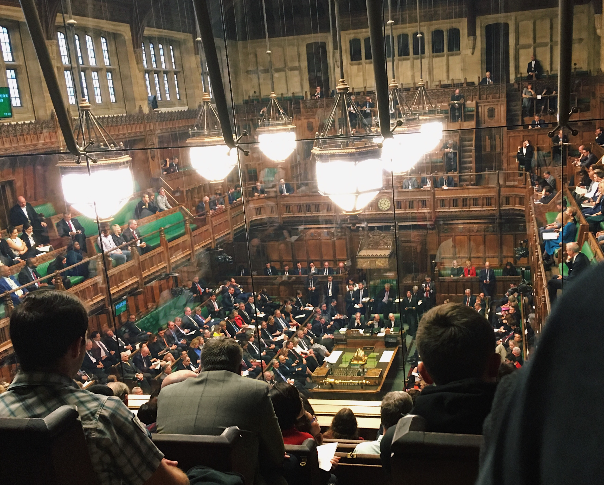
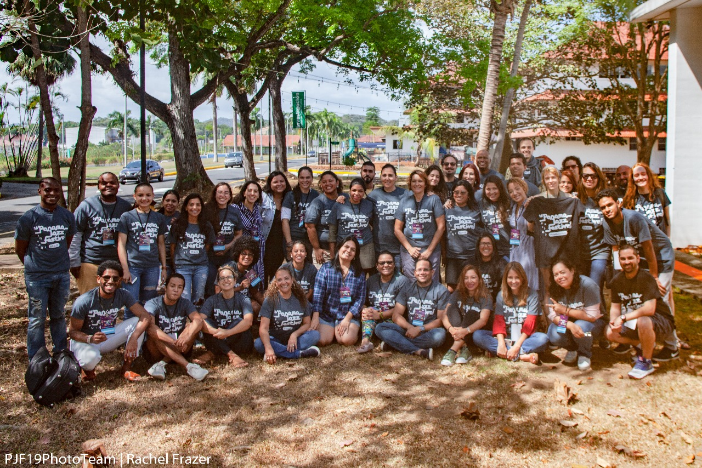
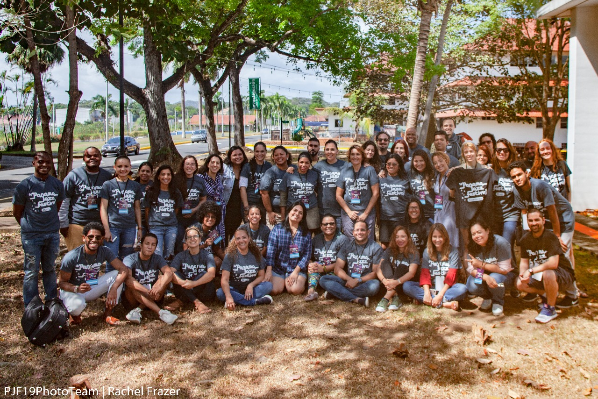

About
I just graduated from Cambridge Rindge and Latin High School one year early - my senior year will be a gap year. During the past three years, I took part-time classes at my high school and part-time classes at Harvard and Tufts. This year, I'm spending the fall working for Adjoint, a blockchain + financial technology startup in Boston where I'm focusing on cryptography-related projects. In the fall and winter, I'm volunteering for the Panama Jazz Festival and learning Spanish. In the spring, I'll work as a crew on boats, sailing and and low-cost traveling around the world. In fall of 2019, I'm going to college.

Hobbies + Photos


 

Resume + Contact
Email me at annamira [at] uname [dot] net.
Reach me by phone at 617.710.0911.
Download my resume here.
Working on Cryptography
at Adjoint
I'm currently working at a startup called Adjoint, focusing on implementing cryptographic protocols in Haskell. I'm learning about Bulletproofs and Arithmetic Circuit Compilers. Adjoint uses a private, permissioned blockchain for their financial technology products. Adjoint's website is here, public projects on GitHub are here, and the amazing people who have taken me in are here.
Related blog that I like: A Few Thoughts On Cryptographic Engineering.
Volunteering for the
Panama Jazz Festival
I'm volunteering part-time during Fall 2018 for Patricia Zarate Perez, the Executive Director of the Panama Jazz Festival. I assist her with logistical planning, coordinating artist information, the event website, and other various projects. I'll travel to Panama City in January and February as a volunteer during the festival, and so I'm learning/practicing Spanish this fall.
MetroHacks

MetroHacks is a student-run nonprofit that promotes STEM education through the form of hackathons.
It was founded in 2016 and is one of the few high school hackathons in New England. This past school year, I led the team as we hosted MetroHacks Women and MetroHacks III.
You can find our website here.

Boston Air Quality Project
Harvard Institute for Applied Computational Science

What's in the Air? Using Mathematical Models to Predict Boston Air Quality
A project created in the summer of 2017, aiming to consolidate air quality data, create accurate statistical models of air quality, and increase data literacy and public knowledge.
Read our paper for more information: Boston Air Quality Project Final Paper
Check out the interactive map here: Interface
A Few Things I'm Doing During My Gap Year:
Hi friends and family, here are some photos from my gap year. I plan to add more activities to it soon. :)
Math Conference in Princeton - September

My friend and I attended the Vladimar Voevodsky Memorial Conference at the Institute for Advanced Study in Princeton. I got to meet many wonderful people, was exposed to new areas of mathematics, category theory, algebraic geometry, topology, homotopy type theory, and computer proof assistants, and learned how category theory can explain functional programming (which I'm using at work at Adjoint). :)
Visiting London Adjoint Office - October, November, and December


Photos from trips to Adjoint's London office!
Haskell Pub Quiz - December


From the London Haskell Meetup Group's holiday pub quiz.
Watching Prime Minister's Questions - December

I reserved tickets through U.S. Embassy to sit-in on Prime Minister's Questions during one of my trips to Adjoint's London office. It was right around when the Tory party triggered the vote of no confidence in Theresa May and the negotiated Brexit deal was being voted down. It was a great time to visit! We also stayed for a debate over EU-UK immigration (second photo).
Homeschooling in Panama Conference - January

Photos above are from the Homeschooling en Panamá community and conference.
Volunteering for the Panama Jazz Festival

 

Photos above are from living in a dormitory in Panama City and volunteering for the Panama Jazz Festival.